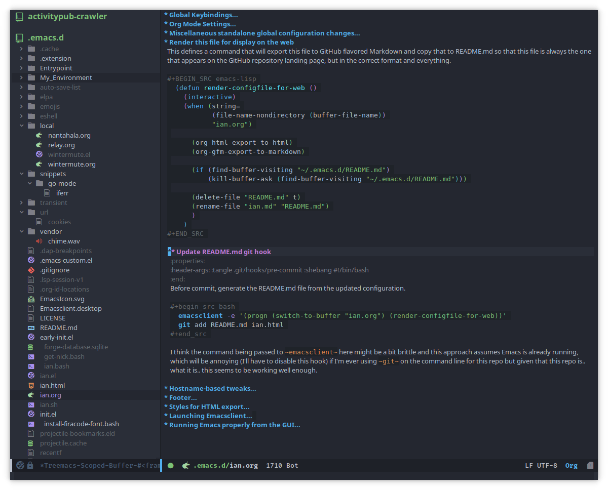

Have I Ever Mentioned How Much I Love Emacs?

Entrypoint
First I need to configure Emacs to load this file (ian.org) as its first action when it starts up. By default, Emacs runs init.el at the beginning of execution. The following piece of code tangles to init.el, and init.el containing the following must be checked in, because this snippet tangles this file (ian.org), so it is this piece of code that starts the whole process of loading all of this configuration.
Since I want most of the configuration here in ian.org, init.el just holds the bare minimum code so that the bulk of the configuration can be checked in once, inside this file, rather than twice like the contents of init.el. I'm using an example from orgmode.org to load the Org files and tangle them, then require the output of this file from the call to tangle, run main, and I'm done.
NOTE The filename ian.org is hardcoded in this entrypoint routine in the place of the main configuration file. This is because, despite the public nature of my config, it is not intended to be used in whole by anyone but me. This allows me certain shortcuts, like hostname-specific configuration, and convention-over-configuration in ways I find intuitive without overly detailed documentation. It is my config, after all, so my main config file is ian.org.
;;; init --- the Emacs entrypoint ;;; Commentary: ;;; ;;; Just load my customizations and execute -- org-mode bootstrap from ;;; https://orgmode.org/worg/org-contrib/babel/intro.html#literate-emacs-init ;;; ;;; Code: ;; Load up Org Mode and (now included) Org Babel for elisp embedded in Org Mode files (setq dotfiles-dir (file-name-directory (or (buffer-file-name) load-file-name))) (let* ((org-dir (expand-file-name "lisp" (expand-file-name "org" (expand-file-name "src" dotfiles-dir)))) (org-contrib-dir (expand-file-name "lisp" (expand-file-name "contrib" (expand-file-name ".." org-dir)))) (load-path (append (list org-dir org-contrib-dir) (or load-path nil)))) ;; load up Org-mode and Org-babel (require 'org-install) (require 'ob-tangle)) ;; load up all literate org-mode files in this directory (mapc #'org-babel-load-file (directory-files dotfiles-dir t "\\.org$")) (require '~/.emacs.d/ian.el) ;; Load automatic and interactive customizations from this computer (shell-command "touch ~/.emacs.d/.emacs-custom.el") (setq custom-file "~/.emacs.d/.emacs-custom.el") (load custom-file) (provide 'init)
The rest of the code that is executed begins with the routines defined by this file.
Package Manager Bootstrap
The first thing that must be done is to prepare to manage third party packages, because my config is built on top of the work of many third party packages. I like to install and manage all of the packages I use as part of my configuration so that it can be duplicated across computers (more or less) and managed with git, so I use use-package to ensure that packages are installed from my configuration file.
Bootstrap sets up the ELPA, Melpa, and Org Mode repositories, sets up the package manager, installs use-package if it is not found, configures use-package and installs a few extra packages that acoutrement use-package and will be used heavily throughout.
;;; ian.el --- my custom emacs config with no one else considered because fuck you ;;; naw but really I just don't have the time for that ;;; ;;; Commentary: ;;; ;;; After throwing away an old Emacs config, built when I had no idea what I was doing ;;; and abandoning the "wisdom of the crowds"-configured Spacemacs for better control ;;; here we are for better or worse ;;; ;;; Code: (require 'package) (setq package-archives '(("gnu" . "https://elpa.gnu.org/packages/") ("melpa" . "https://melpa.org/packages/") ("org" . "http://orgmode.org/elpa/"))) (package-initialize) ;; Now install use-package to enable us to use it ;; to manage the rest of our packages (unless (package-installed-p 'use-package) (progn (unless package-archive-contents (package-refresh-contents)) (package-install 'use-package))) ;; set ensure to be the default (require 'use-package-ensure) (setq use-package-always-ensure t) (use-package use-package-ensure-system-package) ;; these go in bootstrap because packages installed ;; with use-package use :diminish and :delight (use-package diminish) (use-package delight)
Once this is done I need to install and configure any third party packages that are used in many modes throughout Emacs. Some of these modes fundamentally change the Emacs experience and need to be present before everything can be configured.
Package Installation and Configuration
First I need to install packages with a large effect and on which other packages are likely to depend. These are packages essential to my workflow. Configuration here should be config that must run early, before variables are set or language-related packages, which will likely rely on these being set.
Icons
Treemacs and Doom themes both rely upon all-the-icons to look nice
(use-package all-the-icons)
Treemacs
Treemacs provides a file browser on the left hand side of Emacs that I have grown to really like. It's great for exploring unfamiliar projects and modules.
It's installed early because many things have integrations with it, including some themes.
(use-package treemacs) (use-package treemacs-all-the-icons)
Theme
I'm using the Doom Emacs theme pack.
I think they're really nice to look at, especially with solaire-mode.
First install the theme pack:
(use-package doom-themes :config ;; Global settings (defaults) (setq doom-themes-enable-bold t ; if nil, bold is universally disabled doom-themes-enable-italic t doom-themes-treemacs-theme "doom-colors" ) ; if nil, italics is universally disabled ;; Corrects (and improves) org-mode's native fontification. (doom-themes-org-config) ;; Configures Treemacs to play nicely with Doom themes (doom-themes-treemacs-config))
Apply a small fix where doom-colors Treemacs theme is missing a few icons
(treemacs-define-custom-icon (treemacs-get-icon-value "sh") "bash") (treemacs-define-custom-icon (treemacs-get-icon-value "cache") "sqlite")
Enable the theme
(load-theme 'doom-one t)
Also some visual candy that makes "real" buffers more visible by changing the background color slightly vs e.g. compilation or magit buffers
(use-package solaire-mode) (solaire-global-mode +1)
The Doom Emacs project also provides a fancy modeline to go along with their themes.
(use-package doom-modeline :ensure t :hook (after-init . doom-modeline-mode))
Emoji 🙏
Provided by emojify.
;; 🙌 Emoji! 🙌 (use-package emojify :config (setq emojify-download-emojis-p t) (emojify-set-emoji-styles '(unicode)) (add-hook 'after-init-hook #'global-emojify-mode))
Configure Recent File Tracking
Emacs comes with recentf-mode which helps me remember what I was doing after I restart my session.
;; recent files mode (recentf-mode 1) (setq recentf-max-menu-items 25) (setq recentf-max-saved-items 25)
Install and Configure Projectile
projectile is a fantastic package that provides all kinds of project context-aware functions for things like:
- running grep, but only inside the project
- compiling the project from the project root without doing anything
- find files within the project, again without having to do anything extra
It's great, it gets installed early, can't live without it. 💘 projectile

(use-package projectile :delight) (use-package helm-projectile) (use-package treemacs-projectile) (projectile-mode +1)
Install and Configure Evil Mode
evil-mode fundamentally changes Emacs so that while editing all of the modes and keybindings from vim are present.
It's controversial but I think modal editing is brilliant and have been using vim bindings since the mid-aughts. No going back.
(defun setup-evil () "Install and configure evil-mode and related bindings." (use-package evil :init (setq evil-want-keybinding nil) (setq evil-want-integration t) :config (evil-mode 1)) (use-package evil-collection :after evil :config (evil-collection-init)) ;; add fd as a remap for esc (use-package evil-escape :delight) (evil-escape-mode 1) (use-package evil-surround :config (global-evil-surround-mode 1)) (use-package undo-tree :config (global-undo-tree-mode) (evil-set-undo-system 'undo-tree)) (use-package treemacs-evil) (setq-default evil-escape-key-sequence "fd"))
Install and Configure Keybindings Helper
General provides more consistent and convenient keybindings, especially with evil-mode.
It's mostly used below in the global keybindings section.
(use-package general :init (setup-evil) :config (general-evil-setup))
Install and Configure Helm for Command and Control
Helm is a full-featured command and control package that fundamentally alters a number of core Emacs functions, including what appears when you press M-x (with the way I have it configured, anyway).
(use-package helm :delight :config (use-package helm-descbinds :config (helm-descbinds-mode)) (use-package helm-ag) (global-set-key (kbd "M-x") #'helm-M-x) (define-key helm-find-files-map "\t" 'helm-execute-persistent-action) (setq helm-always-two-windows nil) (setq helm-default-display-buffer-functions '(display-buffer-in-side-window)) (helm-mode 1))
Install and Configure Magit
Magit is an incredible integrated git UI for Emacs.

(use-package magit) ;; disable the default emacs vc because git is all I use, ;; for I am a simple man (setq vc-handled-backends nil)
The Magit author publishes an additional package called forge. Forge lets you interact with GitHub and Gitlab from inside of Emacs. There's planned support for Gogs, Gitea, etc.
(use-package forge :after magit)
Forge has to be configured with something like .authinfo or preferably authinfo.gpg. Create a access token through the web UI of GitHub and place on the first line in $HOME/.authinfo with the following format:
host api.github.com login gigawhitlocks^forge password TOKEN
but obviously replace TOKEN with the access token. And use .authinfo.gpg and encrypt it. Don't just use .authinfo.
Also, I've only tried this with GitHub. But at least in the case of GitHub, once Forge is set up, it adds some niceties like this to the Magit overview. In this case, I'm looking at the history of a project and Forge automatically adds a link to the PR displayed as part of the commit title in history:

Install and Configure git-timemachine
git-timeline lets you step through the history of a file.

(use-package git-timemachine) ;; This lets git-timemachine's bindings take precedence over evils' ;; (got lucky and happened to find this while looking for the package name, ha!) ;; @see https://bitbucket.org/lyro/evil/issue/511/let-certain-minor-modes-key-bindings (eval-after-load 'git-timemachine '(progn (evil-make-overriding-map git-timemachine-mode-map 'normal) ;; force update evil keymaps after git-timemachine-mode loaded (add-hook 'git-timemachine-mode-hook #'evil-normalize-keymaps)))
Install and Configure which-key
It can be difficult to to remember and discover all of the available shortcuts in Emacs, so which-key pops up a special buffer to show you available shortcuts whenever you pause in the middle of a keyboard shortcut for more than a few seconds. It's really lovely.

(use-package which-key :delight :init (which-key-mode) (which-key-setup-minibuffer))
Colorize ANSI colors in *compilation*
If you run a command through M-x compile by default Emacs prints ANSI codes literally, but a lot of tools use these for colors and this makes it so Emacs shows colors in the *compilation* buffer.
(defun ansi () ;; enable ANSI escape codes in compilation buffer (use-package ansi-color) ;; slightly modified from ;; https://endlessparentheses.com/ansi-colors-in-the-compilation-buffer-output.html (defun colorize-compilation () "Colorize from `compilation-filter-start' to `point'." (let ((inhibit-read-only t)) (ansi-color-apply-on-region compilation-filter-start (point)))) (add-hook 'compilation-filter-hook #'colorize-compilation)) (ansi)
Scream when compilation is finished
Sometimes when the compile process takes more than a few seconds I change windows and get distracted. This hook plays a file through aplay (something else that will break on a non-Linux machine) to notify me that compilation is done. I was looking for something like a kitchen timer but I couldn't find one so right now the vendored sound is the Wilhelm Scream.
(defvar isw-should-play-chime nil) (setq isw-should-play-chime nil) (defun isw-play-chime (buffer msg) (if (eq isw-should-play-chime t) (start-process-shell-command "chime" "*Messages*" "aplay /home/ian/.emacs.d/vendor/chime.wav"))) (add-to-list 'compilation-finish-functions 'isw-play-chime)
A function for toggling the screaming on and off. I love scream-when-finished but sometimes I'm listening to music or something and it gets a little ridiculous.
(defun toggle-screaming () (interactive) (if (eq isw-should-play-chime t) (setq isw-should-play-chime nil) (setq isw-should-play-chime t)))
Configure the Startup Splashscreen
Following Spacemacs's style, I use the emacs-dashboard project and all-the-icons to provide an aesthetically pleasing splash screen with useful links to recently used files on launch.
Actually, looking at the project page, the icons don't seem to be working for me. Maybe I need to enable them. I'll investigate later.

;; first disable the default startup screen (setq inhibit-startup-screen t) (use-package dashboard :config (dashboard-setup-startup-hook) (setq dashboard-startup-banner 'logo) (setq dashboard-center-content t) (setq dashboard-items '((recents . 5) (bookmarks . 5) (projects . 5)) ) ) (setq dashboard-set-footer nil)
Install and Configure GNU Hyperbole
GNU Hyperbole adds a bunch of window control features, namely the ability to swap two windows by hitting Shift + Right Click and dragging the window to a new position!
It adds a slew of other features as well – hyperlinks between documents, a rolodex, a list builder.
;; gnu hyperbole (use-package hyperbole)
It turns out that the only feature I use from Hyperbole is the window dragging feature. I wonder if that's provided by any other, lighter-weight package? 🤔 Or maybe I should give some of the other features another look?
Install templating tool and default snippets
YASnippet is really cool and allow fast insertion of boilerplate using templates. I've been meaning to use this more. Here are the YASnippet docs.

OK that example maybe isn't the best, but if you have yas-insert-snippet bound to something and you're inserting something more complex it's.. probably worthwhile. I should use it more. You can also write your own snippets. I should figure that out.
(use-package yasnippet :delight :config (use-package yasnippet-snippets))
Enable yas-mode everywhere
(yas-global-mode 1)
Smooth scrolling, distraction-free mode, and minimap
(use-package sublimity) (require 'sublimity-attractive) (sublimity-mode 1) (setq sublimity-attractive-centering-width 120)
Extra Packages
Packages with a smaller effect on the experience.
git-gutter shows unstaged changes in the gutter
(use-package git-gutter :delight :config (global-git-gutter-mode +1))
Highlight the current line
I like to highlight the current line so that it is easy to identify where my cursor is.
(global-hl-line-mode) (setq global-hl-line-sticky-flag t)
Rainbow delimiters make it easier to identify matching parentheses
(use-package rainbow-delimiters :config ;; set up rainbow delimiters for Emacs lisp (add-hook 'emacs-lisp-mode-hook #'rainbow-delimiters-mode) )
restart-emacs does what it says on the tin
(use-package restart-emacs)
s is a string manipulation utility
I use this for a trim() function far down below. I think it gets pulled in as a dependency anyway, but in any case it provides a bunch of helper functions and stuff. Docs are here.
(use-package s)
figlet
The description on the package is "Annoy people with big, ascii art text" 🤣
(use-package figlet)
a systemd file mode
Just provides syntax highlighting in .unit files.
(use-package systemd)
Install and Configure Company for Auto-Completion
Great tab-complete and auto-complete with Company Mode.
;; auto-completion (use-package company :delight :config ;; enable it everywhere (add-hook 'after-init-hook 'global-company-mode) ;; tab complete! (global-set-key "\t" 'company-complete-common)) (use-package company-box :hook (company-mode . company-box-mode))
Install and Configure Flycheck for Linting
Flycheck is an on-the-fly checker that hooks into most language backends.
;; linter (use-package flycheck :delight ;; enable it everywhere :init (global-flycheck-mode)) (add-hook 'flycheck-error-list-mode-hook 'visual-line-mode)
Install exec-path-from-shell to manage the PATH
exec-path-from-shell mirrors PATH in zsh or Bash in macOS or Linux into Emacs so that the PATH in the shell and the PATH when calling commands from Emacs are the same.
(use-package exec-path-from-shell :config (exec-path-from-shell-initialize))
ace-window provides an ace-jump experience for switching windows
(use-package ace-window)
Install a mode for drawing indentation guides
This mode adds subtle coloration to indentation whitespace for whitespace-delimited languages like YAML where sometimes it can be difficult to see the nesting level of a given headline in deeply-nested configuration.
(use-package highlight-indent-guides)
Quick buffer switcher
PC style quick buffer switcher for Emacs
This switches Emacs buffers according to most-recently-used/least-recently-used order using C-tab and C-S-tab keys. It is similar to window or tab switchers that are available in PC desktop environments or applications.
Bound by default to C-<TAB> and C-S-<TAB>, I have decided that these are sane defaults. Just install this and turn it on.
(use-package pc-bufsw) (pc-bufsw)
Writeable grep mode with ack
Writable grep mode allows you to edit the results from running grep on a project and easily save changes back to all of the original files
(use-package ack) (use-package wgrep-ack)
Better help buffers
(use-package helpful) (global-set-key (kbd "C-h f") #'helpful-callable) (global-set-key (kbd "C-h v") #'helpful-variable) (global-set-key (kbd "C-h k") #'helpful-key)
Quickly jump around buffers
(use-package ace-jump-mode)
Font
The FiraCode font is a programming-focused font with ligatures that looks nice and has a open license so I'm standardizing my editor configuration on that font
FiraCode Font Installation Script
Installing fonts is always a pain so I'm going to use a variation of the installation script that the FireCode devs provide under their manual installation guide. This should be Linux-distribution agnostic, even though the font can be installed as a system package with on all of my systems on 2022-02-19 Sat with just
sudo apt install fonts-firacode
because I don't intend to use Ubuntu as my only system forever. I just happen to be on Ubuntu on 2022-02-19 Sat.
But first, I want to be able to run this script every time Emacs starts, but only have the script actually do anything if the font is not already installed.
This guard will check to see if there's any font with 'fira' in it (case insensitive) and if so, just exits the script. This will happen on most executions.
set -eo pipefail [[ $(fc-list | grep -i fira) != "" ]] && exit 0
Now here's the standard installation script, stripped of the shebang to go after my guard
fonts_dir="${HOME}/.local/share/fonts" if [ ! -d "${fonts_dir}" ]; then mkdir -p "${fonts_dir}" fi version=5.2 zip=Fira_Code_v${version}.zip curl --fail --location --show-error https://github.com/tonsky/FiraCode/releases/download/${version}/${zip} --output ${zip} unzip -o -q -d ${fonts_dir} ${zip} rm ${zip} # for now we need the Symbols font, too zip=FiraCode-Regular-Symbol.zip curl --fail --location --show-error https://github.com/tonsky/FiraCode/files/412440/${zip} --output ${zip} unzip -o -q -d ${fonts_dir} ${zip} rm ${zip} fc-cache -f
This installation script was sourced from https://github.com/tonsky/FiraCode/wiki/Linux-instructions#installing-with-a-package-manager
Enable FiraCode Font
Calling the script from above will install the font
(shell-command "chmod +x ~/.emacs.d/install-firacode-font.bash") (shell-command "~/.emacs.d/install-firacode-font.bash")
Enable it
(add-to-list 'default-frame-alist '(font . "Fira Code-10")) (set-frame-font "Fira Code-10" nil t)
Configure FiraCode special features
FiraCode offers ligatures for programming symbols, which is cool.
TODO Use the new method after upgrading to Emacs 28
The following, taken from the installation guide, enables these using the ligature.el method:
;; ;; Enable the www ligature in every possible major mode ;; (ligature-set-ligatures 't '("www")) ;; ;; Enable ligatures in programming modes ;; (ligature-set-ligatures 'prog-mode '("www" "**" "***" "**/" "*>" "*/" "\\\\" "\\\\\\" "{-" "::" ;; ":::" ":=" "!!" "!=" "!==" "-}" "----" "-->" "->" "->>" ;; "-<" "-<<" "-~" "#{" "#[" "##" "###" "####" "#(" "#?" "#_" ;; "#_(" ".-" ".=" ".." "..<" "..." "?=" "??" ";;" "/*" "/**" ;; "/=" "/==" "/>" "//" "///" "&&" "||" "||=" "|=" "|>" "^=" "$>" ;; "++" "+++" "+>" "=:=" "==" "===" "==>" "=>" "=>>" "<=" ;; "=<<" "=/=" ">-" ">=" ">=>" ">>" ">>-" ">>=" ">>>" "<*" ;; "<*>" "<|" "<|>" "<$" "<$>" "<!--" "<-" "<--" "<->" "<+" ;; "<+>" "<=" "<==" "<=>" "<=<" "<>" "<<" "<<-" "<<=" "<<<" ;; "<~" "<~~" "</" "</>" "~@" "~-" "~>" "~~" "~~>" "%%")) ;; (global-ligature-mode 't)
Unfortunately, it's not supported in Emacs 27, which is what I'm using for now. In the future I would like to use this approach, so I will leave it commented out above.
Configure with a less-optimal method
Ligatures have turned out to be a bigger pain than I'd hoped. This is the suboptimal configuration that I'll keep until Emacs 28 comes out. Once that's out, I can delete all of this, and also I can remove the fetch and installation of the FiraCode Symbols font in the installation script above.
First of all, install the helper mode:
(use-package fira-code-mode ;; List of ligatures to turn off :custom (fira-code-mode-disabled-ligatures '("[]" "#{" "#(" "#_" "#_(" "x")) )
But the ligatures are broken in the terminal with this mode. I would prefer that they just get disabled automatically when opening buffers in the terminal, but I guess the maintainer of fira-code-mode doesn't use the terminal
I need to at least be able to quickly turn the ligatures off, and shouldn't automatically turn them on when opening a file in the terminal.
First I needed a helper function to determine what buffers are active (I don't know why there isn't a built-in that does this, so thanks Stack Exchange for allowing me to avoid thinking on this occasion)
;; I didn't write this (defun isw-get-active-minor-modes-in-buffer-list () "Get a list of which minor modes are enabled in the current buffer." (let ($list) (mapc (lambda ($mode) (condition-case nil (if (and (symbolp $mode) (symbol-value $mode)) (setq $list (cons $mode $list))) (error nil))) minor-mode-list) (sort $list 'string<)))
Now I can use that function to write a command that turns them on and off in the current buffer. I have this bound to SPC t l in the Global Keybindings section.
(defun toggle-ligatures () (interactive) (if (memq 'fira-code-mode (isw-get-active-minor-modes-in-buffer-list)) (fira-code-mode -1) (fira-code-mode)) (redraw-display) )
Finally, define the hook so that it doesn't automatically turn ligatures on when opening files in the terminal.
(defun isw-enable-ligatures-hook () (if (not (equal (window-system) nil)) (fira-code-mode 1) )) (add-hook 'prog-mode-hook 'isw-enable-ligatures-hook)
This solves the problem except when visiting a buffer in teminal which is already open in the GUI. I couldn't quite get this working, so it's commented out, but this is supposed to disable fira-code-mode when visiting the buffer. The helper works when I run it manually, but something is wrong about how I'm using window-selection-change-functions I guess.
;; (defun isw-disable-ligatures-in-terminals () ;; (print "running") ;; (if (equal (window-system) nil) ;; (if (memq 'fira-code-mode (isw-get-active-minor-modes-in-buffer-list)) ;; (progn ;; (print "deactivating") ;; (fira-code-mode -1)) ;; ))) ;; (add-hook 'window-selection-change-functions 'isw-disable-ligatures-in-terminals)
Not spending more time on this unless Emacs 28 doesn't fix the problem. SPC t l is good enough.
Boy the ligatures look nice in the GUI though..
Language Configuration
Language Server Protocol
LSP provides a generic interface for text editors to talk to various language servers on the backend. A few languages utilize LSP so it gets configured before the language-specific section.
(use-package lsp-mode :init ;; use flycheck (setq lsp-prefer-flymake nil) (setq lsp-headerline-breadcrumb-enable nil)) ;; treemacs integration (use-package lsp-treemacs) ;; the UI (use-package lsp-ui) ;; linking breaks treemacs ;; also it's annoying (setq lsp-enable-links nil) ;; folding library integation (use-package lsp-origami) ;; helm integration (use-package helm-lsp) (setq lsp-eldoc-enable-hover t) (setq lsp-ui-doc-enable t) (setq lsp-ui-doc-include-signature t) (setq lsp-ui-doc-position 'at-point) (setq lsp-ui-doc-use-childframe nil) (setq lsp-ui-doc-use-webkit nil) (setq lsp-lens-enable nil)
Fix background color of lsp-ui-doc in various themes
By default, for some reason, lsp-ui-doc chooses an ugly background color that looks bad and doesn't match the background surrounding most of the text.
I had to edit a few faces with Customize. Some notes:
- Using lsp-ui-doc's child frame mode causes lsp-ui-doc-background to be ignored for some reason
so
lsp-ui-doc-use-childframemust benil - By default, the background color is interrupted by a mismatch with
markdown-code-facewhich doesn't matchlsp-ui-doc-background - Thus,
lsp-ui-doc-backgroundis set viaM-x customize-faceto inherit from (match)markdown-code-faceand saved in.emacs-custom.el
Tree Sitter
Tree-sitter reads the AST to provide better syntax highlighting
(use-package tree-sitter :diminish ) (use-package tree-sitter-langs) (global-tree-sitter-mode) (add-hook 'tree-sitter-after-on-hook #'tree-sitter-hl-mode)
YAML
(use-package yaml-mode) (add-hook 'yaml-mode-hook 'highlight-indent-guides-mode)
Markdown
(use-package markdown-mode :ensure t :mode (("README\\.md\\'" . gfm-mode) ("\\.md\\'" . gfm-mode) ("\\.markdown\\'" . gfm-mode))) (add-hook 'markdown-mode-hook 'visual-line-mode) (add-hook 'markdown-mode-hook 'variable-pitch-mode) ;; this can go here because it affects Markdown's live preview mode ;; but I should consider putting it somewhere more general maybe? (add-hook 'eww-mode-hook 'visual-line-mode) ;; show code blocks w/ monospace font (set-face-attribute 'markdown-code-face nil :inherit 'fixed-pitch)
Docker
(use-package dockerfile-mode) (add-to-list 'auto-mode-alist '("Dockerfile\\'" . dockerfile-mode)) (put 'dockerfile-image-name 'safe-local-variable #'stringp)
Python
auto-virtualenv looks in $WORKON_HOME for virtualenvs, and then I can run M-x pyvenv-workon RET project RET to choose my virtualenv for project, found in $WORKON_HOME, or a symlink anyway.
(use-package auto-virtualenv) (add-hook 'python-mode-hook 'auto-virtualenv-set-virtualenv) (setenv "WORKON_HOME" "~/.virtualenvs")
So the convention for use is:
- Create a virtualenv as usual for the project
- Symlink it inside ~/.virtualenvs
M-x pyvenv-workon
Go

Dependencies
Go support requires some dependencies. I will try to list them all here. Stuff I have installed has some overlap because of the in-progress move to LSP, but I'll prune it later.
- First,
goitself must be installed, install however, and avalailable on thePATH. gopls, the language server for LSP mentioned above https://github.com/golang/tools/blob/master/gopls/doc/user.md. I have been just running this off ofmasterso I can experience all the latestbugsfeatures, so clone the gopls project (TODO find the url for it and put a link here) andgo installit. After you're donegoplsshould also be on thePATH. Directions for configuringgoplsthrough this file are found here.golinthas to be installed independently
$ go get https://github.com/golang/lint
Nothing to do with Emacs, but eg also looks really cool:
$ go get golang.org/x/tools/cmd/eg
golangci-lintis a meta linter that calls a bunch of 3rd party linters (configurable) and replaces the old one that used to freeze my computer.go-metalinter, I think, is what it was called. Anyway, it used to crash my computer and apparently that was a common experience. Anywaygolangci-lintmust be installed independently, too:
# install it into ./bin/ $ curl -sSfL https://raw.githubusercontent.com/golangci/golangci-lint/master/install.sh | sh -s v1.23.6
Initial Setup
(defun set-gopls-lib-dirs () "Add $GOPATH/pkg/mod to the 'library path'." ;; stops lsp from continually asking if Go projects should be imported (setq lsp-clients-go-library-directories (list "/usr" (concat (getenv "GOPATH") "/pkg/mod")))) (use-package go-mode :hook ((go-mode . lsp-deferred) (go-mode . set-gopls-lib-dirs) (go-mode . yas-minor-mode)) :config ;; fixes ctrl-o after goto-definition by telling evil that godef-jump jumps ;; I don't believe I need to do this anymore, as I use lsp instead of godef now (evil-add-command-properties #'godef-jump :jump t)) ;; enable golangci-lint to work with flycheck (use-package flycheck-golangci-lint :hook (go-mode . flycheck-golangci-lint-setup))
Package and Configuration for Executing Tests
(use-package gotest) (advice-add 'go-test-current-project :before #'projectile-save-project-buffers) (advice-add 'go-test-current-test :before #'projectile-save-project-buffers) (add-hook 'go-test-mode-hook 'visual-line-mode)
REPL
Gore provides a REPL and gorepl-mode lets you use it from Emacs. In order to use the REPL from Emacs, you must first install Gore:
go get -u github.com/motemen/gore/cmd/gore
Gore also uses gocode for code completion, so install that (even though Emacs uses go-pls for the same).
go get -u github.com/mdempsky/gocode
Once that's done gorepl-mode is ready to be installed:
(use-package gorepl-mode)
Interactive debugger
I got jealous of a coworker with an IDE who apparently has an interactive debugger, so I got dap-mode working 🙂
- Installation and Configuration
Install
dap-modeanddap-go.dap-modeis probably useful for other languages so at some point I will want to refactor it out and install it alongside LSP, but keepdap-gohere. Probably. But this works for now, and who knows, maybe debugging Go is really all I care about.(use-package dap-mode) (require 'dap-go) (dap-mode 1) (dap-ui-mode 1) (dap-ui-controls-mode 1) (tooltip-mode 1) (setq dap-ui-variable-length 100)
- Use
- When debugging a new executable for the first time
Run this command
M-x dap-debug-edit-template
and save the
(dap-register-debug-template )call that is generated.. somewhere alongside the code hopefully. I'll come up with some convention for storing these. Maybe dir-locals (SPC p E) - Each time when ready to start debugging
Start debugging by running:
M-x dap-debug
Click in the margins to set breakpoints with
dap-ui-modeenabled (🙌)
- When debugging a new executable for the first time
Mode-Specific Keybindings
(general-define-key :states 'normal :keymaps 'go-mode-map ",a" 'go-import-add ",d" 'lsp-describe-thing-at-point ",gg" 'lsp-find-definition ",gt" 'lsp-find-type-definition ",i" 'lsp-find-implementation ",n" 'lsp-rename ",r" 'lsp-ui-peek-find-references ",R" 'lsp-find-references ",tp" 'go-test-current-project ",tt" 'go-test-current-test ",tf" 'go-test-current-file ",x" 'lsp-execute-code-action ",lsp" 'lsp-workspace-restart "gd" 'lsp-find-definition ;; using the ,c namespace for repl and debug stuff to follow the C-c ;; convention found in other places in Emacs ",cc" 'dap-debug ",cr" 'gorepl-run ",cg" 'gorepl-run-load-current-file ",cx" 'gorepl-eval-region ",cl" 'gorepl-eval-line ;; origami-mode works better with lsp than regular evil-mode "TAB" 'origami-toggle-node "zm" 'origami-toggle-node "zM" 'origami-toggle-all-nodes "zc" 'origami-close-node "zC" 'origami-close-node-recursively "zo" 'origami-open-node "zO" 'origami-open-node-recursively ;; except for when it totally breaks lol "zr" 'origami-reset ) (autoload 'go-mode "go-mode" nil t) (add-to-list 'auto-mode-alist '("\\.go\\'" . go-mode))
Hooks
;; disable "Organize Imports" warning that never goes away (add-hook 'go-mode-hook (lambda () ;; Go likes origami-mode (origami-mode) ;; lsp ui sideline code actions are annoying in Go (setq-local lsp-ui-sideline-show-code-actions nil))) ;; sets the visual tab width to 2 spaces per tab in Go buffers (add-hook 'go-mode-hook (lambda () (set (make-local-variable 'tab-width) 2))) (defun lsp-go-install-save-hooks () (add-hook 'before-save-hook #'lsp-format-buffer t t) (add-hook 'before-save-hook #'lsp-organize-imports t t)) (add-hook 'go-mode-hook #'lsp-go-install-save-hooks)
Exclude a certain folder from LSP projects
Certain projects use a gopath folder inside the project root and this confuses LSP/gopls.
(with-eval-after-load 'lsp-mode (add-to-list 'lsp-file-watch-ignored-directories "[/\\\\]\\.GOPATH\\'"))
Incidentally, that regex up there is a fucking nightmare and Emacs Lisp should be ashamed. That or maybe there's some secret way to do it so there isn't backslash hell. But holy crap that is a horrible line of code. I think we can all agree with that.
Rust
To install the Rust language server:
- Install
rustup. - Run
rustup component add rls rust-analysis rust-src.
(use-package rust-mode :hook ((rust-mode . lsp-deferred))) (general-define-key :states 'normal :keymaps 'rust-mode-map ",d" 'lsp-describe-thing-at-point ",gg" 'lsp-find-definition ",gt" 'lsp-find-type-definition ",i" 'lsp-find-implementation ",n" 'lsp-rename ",r" 'lsp-find-references ",x" 'lsp-execute-code-action ",lsp" 'lsp-workspace-restart "gd" 'lsp-find-definition ) (defun lsp-rust-install-save-hooks () (add-hook 'before-save-hook #'lsp-format-buffer t t)) (add-hook 'rust-mode-hook #'lsp-rust-install-save-hooks)
Web
After some amount of searching and fumbling about I have discovered web-mode which appears to be the one-stop-shop solution for all of your HTML and browser-related needs. It handles a whole slew of web-related languages and templating formats and plays nicely with LSP. It's also the only package that I could find that supported .tsx files at all.
So yay for web-mode!
(use-package web-mode :mode (("\\.html$" . web-mode) ("\\.js$" . web-mode) ("\\.jsx$" . web-mode) ("\\.ts$" . web-mode) ("\\.tsx$" . web-mode) ("\\.css$" . web-mode)) :hook ((web-mode . lsp-deferred)) :config (setq web-mode-enable-css-colorization t) (setq web-mode-enable-auto-pairing t))
Setting highlighting for special template modes
;; web-mode can provide syntax highlighting for many template ;; engines, but it can't detect the right one if the template uses a generic ending. ;; If a project uses a generic ending for its templates, such ;; as .html, add it below. It would be more elegant to handle this by ;; setting this variable in .dir-locals.el for each project, ;; unfortunately due to this https://github.com/fxbois//issues/799 that ;; is not possible :( (setq web-mode-engines-alist '( ("go" . ".*example_project_dir/.*\\.html\\'") ;; add more projects here.. ))
JSON
(use-package json-mode :mode (("\\.json$" . json-mode )) ) (add-hook 'json-mode-hook 'highlight-indent-guides-mode)
Default Keybindings C-c C-f: format the region/buffer with json-reformat (https://github.com/gongo/json-reformat) C-c C-p: display a path to the object at point with json-snatcher (https://github.com/Sterlingg/json-snatcher) C-c P: copy a path to the object at point to the kill ring with json-snatcher (https://github.com/Sterlingg/json-snatcher) C-c C-t: Toggle between true and false at point C-c C-k: Replace the sexp at point with null C-c C-i: Increment the number at point C-c C-d: Decrement the number at point
Shell
Shell mode is pretty good vanilla, but I prefer to use spaces rather than tabs for indents with languages like Bash because they just tend to format more reliably. Tabs are .. theoretically more flexible, so maybe I can come back to consider this.
But for now, disable indent-tabs-mode in shell script editing mode because I have been observing behavior from whitespace-cleanup-mode that when indent-tabs-mode is t it will change 4 spaces to a tab even if there are other spaces being used for indent, even on the same line, and regardless as to the never-ending debate about spaces and tabs and all that, everyone can agree that 1) mixing spaces and tabs is terrible and 2) your editor shouldn't be mixing spaces and tabs automatically at pre-save time.
(add-hook 'sh-mode-hook (lambda () (defvar-local indent-tabs-mode nil)))
TODO I don't know if this still works 👆
Salt
(use-package salt-mode) (add-hook 'salt-mode-hook (lambda () (flyspell-mode 1))) (general-define-key :states 'normal :keymaps 'sh-mode-map ",c" (general-simulate-key "C-x h C-M-x") )
Vyper
(use-package vyper-mode)
Adaptive Wrap and Visual Line Mode
Here I've done some black magic fuckery for a few modes. Heathens in modern languages and also some other prose modes don't wrap their long lines at 80 characters like God intended so instead of using visual-column-mode which I think does something similar but probably would've been easier, I've defined an abomination of a combination of visual-line-mode (built-in) and adaptive-wrap-prefix-mode to dynamically (visually) wrap and indent long lines in languages like Go with no line length limit so they look nice on my screen at any window width and don't change the underlying file — and it's actually pretty cool.
(use-package adaptive-wrap :config (setq-default adaptive-wrap-extra-indent 2) (defun adaptive-and-visual-line-mode (hook) (add-hook hook (lambda () (progn (visual-line-mode) (adaptive-wrap-prefix-mode))))) (mapc 'adaptive-and-visual-line-mode (list 'markdown-mode 'go-mode-hook 'js2-mode-hook 'yaml-mode-hook 'rjsx-mode-hook)) (add-hook 'compilation-mode-hook #'adaptive-wrap-prefix-mode) (setq compilation-scroll-output t))
Global Keybindings
Helper Functions
(defun find-initfile () "Open main config file." (interactive) (find-file "~/.emacs.d/ian.org")) (defun find-initfile-other-frame () "Open main config file in a new frame." (interactive) (find-file-other-frame "~/.emacs.d/ian.org")) (defun reload-initfile () "Reload the main config file." (interactive) (org-babel-tangle "~/.emacs.d/ian.org") (byte-compile-file "~/.emacs.d/ian.el")) (defun close-client-frame () "Exit emacsclient." (interactive) (server-edit "Done")) (defun last-window () "Switch to the last window." (interactive) (other-window -1 t)) (defun toggle-line-numbers-rel-abs () "Toggles line numbers between relative and absolute numbering" (interactive) (if (equal display-line-numbers-type 'relative) (setq display-line-numbers-type 'absolute) (setq display-line-numbers-type 'relative)) (if (equal display-line-numbers-mode t) (progn (display-line-numbers-mode -1) (display-line-numbers-mode))))
Global Leader Keymappings
These are all under SPACE, following the Spacemacs pattern. Yeah, my configuration is a little of Spacemacs, a little of Doom, and a little of whatever I feel inspired by.
These keybindings are probably the most opinionated part of my configuration. They're shortcuts I can remember, logically or not.
;; define the spacebar as the global leader key, following the ;; Spacemacs pattern, which I've been using since 2014 (general-create-definer my-leader-def :prefix "SPC") ;; define SPC m for minor mode keys, even though I use , sometimes (general-create-definer my-local-leader-def :prefix "SPC m") ;; global keybindings with LEADER (my-leader-def 'normal 'override "aa" 'ace-jump-mode "ag" 'org-agenda "bb" 'helm-buffers-list "TAB" #'switch-to-prev-buffer "br" 'revert-buffer "bd" 'evil-delete-buffer "ds" (defun isw-desktop-save () (interactive) (desktop-save "~/desktop-saves")) "dr" (defun isw-desktop-read () (interactive) (desktop-read "~/desktop-saves")) "cc" 'projectile-compile-project "ec" 'flycheck-clear "el" 'flycheck-list-errors "en" 'flycheck-next-error "ep" 'flycheck-previous-error "Fm" 'make-frame "Ff" 'toggle-frame-fullscreen "ff" 'helm-find-files "fr" 'helm-recentf "fd" 'dired "fed" 'find-initfile "feD" 'find-initfile-other-frame "feR" 'reload-initfile "gb" 'magit-blame "gs" 'magit-status "gg" 'magit "gt" 'git-timemachine "gd" 'magit-diff "h" 'hyperbole "jj" 'bookmark-jump "js" 'bookmark-set "jo" 'org-babel-tangle-jump-to-org "ic" 'insert-char "is" 'yas-insert-snippet "n" '(:keymap narrow-map) "oo" 'browse-url-at-point "p" 'projectile-command-map "pf" 'helm-projectile-find-file "p!" 'projectile-run-async-shell-command-in-root "si" 'yas-insert-snippet "sn" 'yas-new-snippet "sp" 'helm-projectile-ag "qq" 'save-buffers-kill-terminal "qr" 'restart-emacs "qz" 'delete-frame "tnn" 'display-line-numbers-mode "tnt" 'toggle-line-numbers-rel-abs "tr" 'treemacs-select-window "ta" 'treemacs-add-project-to-workspace "ts" 'toggle-screaming "tt" 'toggle-transparency "tl" 'toggle-ligatures "tw" 'whitespace-mode "w-" 'split-window-below "w/" 'split-window-right "wa" 'ace-window "wb" 'last-window "wj" 'evil-window-down "wk" 'evil-window-up "wh" 'evil-window-left "wl" 'evil-window-right "wd" 'delete-window "wD" 'delete-other-windows "wo" 'other-window "w=" 'balance-windows "SPC" 'helm-M-x ) ;; global VISUAL mode map (general-vmap ";" 'comment-or-uncomment-region)
Org Mode Settings
Some default evil bindings
(use-package evil-org)
Image drag-and-drop for org-mode
(use-package org-download)

Autocomplete for Org blocks (like source blocks)
(use-package company-org-block) ;; TODO configuration
Install some tools for archiving web content into Org
(use-package org-web-tools)
(setq org-export-coding-system 'utf-8) ;; Fontify the whole line for headings (with a background color). (setq org-fontify-whole-heading-line t) ;; disable the weird default editing window layout in org-mode ;; instead, just replace the current window with the editing one.. (setq org-src-window-setup 'current-window) ;; indent and wrap long lines in Org (add-hook 'org-mode-hook 'org-indent-mode) (add-hook 'org-mode-hook 'visual-line-mode) ;; enable execution of languages from Babel (org-babel-do-load-languages 'org-babel-load-languages '( (shell . t) ) ) (my-local-leader-def :states 'normal :keymaps 'org-mode-map "y" 'org-store-link "p" 'org-insert-link "x" 'org-babel-execute-src-block "s" 'org-insert-structure-template "e" 'org-edit-src-code "t" 'org-babel-tangle "o" 'org-export-dispatch ) (general-define-key :states 'normal :keymaps 'org-mode-map "TAB" 'evil-toggle-fold) ;; github-flavored markdown (use-package ox-gfm) ;; htmlize prints the current buffer or file, as it would appear in ;; Emacs, but in HTML! It's super cool and TODO I need to move this ;; use-package statement somewhere I can talk about htmlize outside of ;; a comment (use-package htmlize) ;; enable markdown export (eval-after-load "org" (progn '(require 'ox-md nil t) '(require 'ox-gfm nil t))) ;; todo states (setq org-todo-keywords '((sequence "TODO(t)" "|" "IN PROGRESS(p)" "|" "DONE(d)") (sequence "QUESTION(q)" "|" "ANSWERED(a)") (sequence "AGENDA(a)" "|" "DONE(d)" ))) ;; enable org-protocol (require 'org-protocol)
Use a variable-pitch font in Org-Mode
Org is mostly prose and prose should be read in a variable-pitch font where possible. This changes fonts in Org to be variable-pitch where it makes sense
(add-hook 'org-mode-hook 'variable-pitch-mode)
Inside of code blocks I want a fixed-pitch font
(add-hook 'org-mode-hook '(lambda () (set-face-attribute 'org-table nil :inherit 'fixed-pitch) (set-face-attribute 'org-block nil :inherit 'fixed-pitch)))
Useful anchors in HTML export
This is taken from github.com/alphapapa's Unpackaged.el collection, unmodified.
(eval-when-compile (require 'easy-mmode) (require 'ox)) (define-minor-mode unpackaged/org-export-html-with-useful-ids-mode "Attempt to export Org as HTML with useful link IDs. Instead of random IDs like \"#orga1b2c3\", use heading titles, made unique when necessary." :global t (if unpackaged/org-export-html-with-useful-ids-mode (advice-add #'org-export-get-reference :override #'unpackaged/org-export-get-reference) (advice-remove #'org-export-get-reference #'unpackaged/org-export-get-reference))) (defun unpackaged/org-export-get-reference (datum info) "Like `org-export-get-reference', except uses heading titles instead of random numbers." (let ((cache (plist-get info :internal-references))) (or (car (rassq datum cache)) (let* ((crossrefs (plist-get info :crossrefs)) (cells (org-export-search-cells datum)) ;; Preserve any pre-existing association between ;; a search cell and a reference, i.e., when some ;; previously published document referenced a location ;; within current file (see ;; `org-publish-resolve-external-link'). ;; ;; However, there is no guarantee that search cells are ;; unique, e.g., there might be duplicate custom ID or ;; two headings with the same title in the file. ;; ;; As a consequence, before re-using any reference to ;; an element or object, we check that it doesn't refer ;; to a previous element or object. (new (or (cl-some (lambda (cell) (let ((stored (cdr (assoc cell crossrefs)))) (when stored (let ((old (org-export-format-reference stored))) (and (not (assoc old cache)) stored))))) cells) (when (org-element-property :raw-value datum) ;; Heading with a title (unpackaged/org-export-new-title-reference datum cache)) ;; NOTE: This probably breaks some Org Export ;; feature, but if it does what I need, fine. (org-export-format-reference (org-export-new-reference cache)))) (reference-string new)) ;; Cache contains both data already associated to ;; a reference and in-use internal references, so as to make ;; unique references. (dolist (cell cells) (push (cons cell new) cache)) ;; Retain a direct association between reference string and ;; DATUM since (1) not every object or element can be given ;; a search cell (2) it permits quick lookup. (push (cons reference-string datum) cache) (plist-put info :internal-references cache) reference-string)))) (defun unpackaged/org-export-new-title-reference (datum cache) "Return new reference for DATUM that is unique in CACHE." (cl-macrolet ((inc-suffixf (place) `(progn (string-match (rx bos (minimal-match (group (1+ anything))) (optional "--" (group (1+ digit))) eos) ,place) ;; HACK: `s1' instead of a gensym. (-let* (((s1 suffix) (list (match-string 1 ,place) (match-string 2 ,place))) (suffix (if suffix (string-to-number suffix) 0))) (setf ,place (format "%s--%s" s1 (cl-incf suffix))))))) (let* ((title (org-element-property :raw-value datum)) (ref (url-hexify-string (substring-no-properties title))) (parent (org-element-property :parent datum))) (while (--any (equal ref (car it)) cache) ;; Title not unique: make it so. (if parent ;; Append ancestor title. (setf title (concat (org-element-property :raw-value parent) "--" title) ref (url-hexify-string (substring-no-properties title)) parent (org-element-property :parent parent)) ;; No more ancestors: add and increment a number. (inc-suffixf ref))) ref))) (add-hook 'org-mode-hook 'unpackaged/org-export-html-with-useful-ids-mode)
Miscellaneous standalone global configuration changes
Opening Sources Directly in Emacs from the Browser
https://orgmode.org/worg/org-contrib/org-protocol.html
First use this .desktop file to register a handler for the new protocol scheme:
[Desktop Entry] Name=org-protocol Comment=Intercept calls from emacsclient to trigger custom actions Categories=Other; Keywords=org-protocol; Icon=emacs Type=Application Exec=/home/ian/bin/org-protocol %u #Exec=emacsclient -- %u Terminal=false StartupWMClass=Emacs MimeType=x-scheme-handler/org-protocol;
After tangling that file to its destination, run the following command to update the database:
update-desktop-database ~/.local/share/applications/
Add the custom org-protocol script to intercept calls from the browser, do any necessary pre-processing, and hand off the corrected input to emacsclient:
# for some reason the bookmarklet strips a colon, so use sed to remove # the botched prefix and rebuild it correctly emacsclient -- org-protocol://open-source://$(echo "$@" | sed 's#org-protocol://open-source//##g') # that's probably a useless call to echo but whatever
For now this is extremely rudimentary and I will improve it as needed.
- Manual Steps:
- The first time, add a button in the browser by creating a bookmarklet containing the following target:
javascript:location.href='org-protocol://open-source://'+encodeURIComponent(location.href)
- Add an entry to
org-protocol-project-alist, defined in the local machine's hostname-specific config found inlocal/. An example can be found on the Worg page above, but here it is again for easy reference:
(setq org-protocol-project-alist '(("Worg" :base-url "https://orgmode.org/worg/" :working-directory "/home/user/worg/" :online-suffix ".html" :working-suffix ".org") ("My local Org-notes" :base-url "http://localhost/org/" :working-directory "/home/user/org/" :online-suffix ".php" :working-suffix ".org")))
N.B. this code block does not get tangled into
ian.el.
TRAMP settings
Only one setting at the moment: use ssh instead of scp when accessing files with ssh: schemes
(setq tramp-default-method "ssh")
Disable most warnings
Honestly I'm not good enough at Emacs to make sense of most of them anyway
(setq warning-minimum-level :emergency)
Switch theme
Automatically calls disable-theme on the current theme before loading a new theme! Allows easy theme switching with just M-x load-theme.
Thanks to https://www.simplify.ba/articles/2016/02/13/loading-and-unloading-emacs-themes/.
(defun load-theme--disable-old-theme (theme &rest args) "Disable current theme before loading new one." (mapcar #'disable-theme custom-enabled-themes)) (advice-add 'load-theme :before #'load-theme--disable-old-theme) (advice-add 'load-theme :after #'(lambda (_ _ _) (org-mode-restart)))
Line Numbers in Programming Buffers
(add-hook 'prog-mode-hook 'display-line-numbers-mode) (setq display-line-numbers-type 'relative)
Transparency toggle
I definitely lifted this from somewhere but failed to document where I got it :\ Probably from Spacemacs. Thanks, Spacemacs.

(defun toggle-transparency () (interactive) (let ((alpha (frame-parameter nil 'alpha))) (set-frame-parameter nil 'alpha (if (eql (cond ((numberp alpha) alpha) ((numberp (cdr alpha)) (cdr alpha)) ;; Also handle undocumented (<active> <inactive>) form. ((numberp (cadr alpha)) (cadr alpha))) 100) '95 '(100 . 100)))))
Switch to last buffer
This one lifted from https://emacsredux.com/blog/2013/04/28/switch-to-previous-buffer/
TODO: Make this behave like alt-tab in Windows, but for buffers. I think hycontrol may come in handy (Hyperbole).
(defun er-switch-to-previous-buffer () (concat "Switch to previously open buffer." "Repeated invocations toggle between the two most recently open buffers.") (interactive) (switch-to-buffer (other-buffer (current-buffer) 1)))
Fix Home/End keys
Emacs has weird behavior by default for Home and End and this change makes the behavior "normal" again.
(global-set-key (kbd "<home>") 'move-beginning-of-line) (global-set-key (kbd "<end>") 'move-end-of-line)
Customize the frame (OS window) title
Taken from StackOverflow, at least for now, which does 90% of what I want and can serve as a future reference of how to customize this aspect of Emacs. This displays the file name and major mode in the OS title bar. Will have to find the documentation that defines the format string passed to frame-title-format at some point.
(setq-default frame-title-format '("%f [%m]"))
Tweak align-regexp
Configure align-regexp to use spaces instead of tabs. This is mostly for this file. When my keybindings are in two columns and M-x align-regexp uses tabs, the columns look aligned in Emacs but unaligned on GitHub. Using spaces faces this. This snippet effects that change.
Lifted from StackOverflow:
https://stackoverflow.com/questions/22710040/emacs-align-regexp-with-spaces-instead-of-tabs
(defadvice align-regexp (around align-regexp-with-spaces activate) (let ((indent-tabs-mode nil)) ad-do-it))
Configure automatic backups/recovery files
I don't like how Emacs puts temp files in the same directory as the file, as this litters the current working directory and makes git branches dirty. These are some tweaks to store those files in /tmp.
(setq backup-directory-alist `(("." . "/tmp/.emacs-saves"))) (setq backup-by-copying t) (setq delete-old-versions t)
TODO Clean whitespace on save in all modes
I have to actually go in and configure this because the defaults keep giving me fucking heartburn. It keeps messing with the whitespace in files that are none of its business. Maybe I just need to carefully enable it for certain modes? idk, too much magic, no time to look into it right now.
;; (add-hook 'before-save-hook 'whitespace-cleanup)
Autosave
Automatically saves the file when it's been idle for 5 minutes.
;; autosave (setq auto-save-visited-interval 300) (auto-save-visited-mode :diminish )
Default window size
Just a bigger size that I prefer..
(add-to-list 'default-frame-alist '(width . 128)) (add-to-list 'default-frame-alist '(height . 60))
Unclutter global modeline
Some global minor modes put themselves in the modeline and it gets noisy, so remove them from the modeline.
;; hide some modes that are everywhere (diminish 'eldoc-mode) (diminish 'undo-tree-mode) (diminish 'auto-revert-mode) (diminish 'evil-collection-unimpaired-mode) (diminish 'yas-minor-mode-major-mode)
Less annoying bell
Flashes the modeline foreground instead of whatever the horrible default behavior was (I don't even remember).
(setq ring-bell-function (lambda () (let ((orig-fg (face-foreground 'mode-line))) ;; change the flash color here ;; overrides themes :P ;; guess that's one way to do it (set-face-foreground 'mode-line "#F2804F") (run-with-idle-timer 0.1 nil (lambda (fg) (set-face-foreground 'mode-line fg)) orig-fg))))
(from Emacs wiki)
Enable the mouse in the terminal
(xterm-mouse-mode 1)
Disable "nice" names in Customize
I prefer that Customize display the names of variables that I can change in this file, rather than the human-readable names for people who customize their Emacs through M-x customize
(setq custom-unlispify-tag-names nil)
TODO Figure out finally how to use marks and jumps, and map this stuff to Evil bindings
Render this file for display on the web
This defines a command that will export this file to GitHub flavored Markdown and copy that to README.md so that this file is always the one that appears on the GitHub repository landing page, but in the correct format and everything.
(defun render-configfile-for-web () (interactive) (when (string= (file-name-nondirectory (buffer-file-name)) "ian.org") (org-html-export-to-html) (org-gfm-export-to-markdown) (if (find-buffer-visiting "~/.emacs.d/README.md") (kill-buffer-ask (find-buffer-visiting "~/.emacs.d/README.md"))) (delete-file "README.md" t) (rename-file "ian.md" "README.md") ) )
Update README.md git hook
Before commit, generate the README.md file from the updated configuration.
emacsclient -e '(progn (switch-to-buffer "ian.org") (render-configfile-for-web))' git add README.md ian.html
I think the command being passed to emacsclient here might be a bit brittle and this approach assumes Emacs is already running, which will be annoying (I'll have to disable this hook) if I'm ever using git on the command line for this repo but given that this repo is.. what it is.. this seems to be working well enough.
Hostname-based tweaks
This is a simple convention that I use for loading machine-specific configuration for the different machines I run Emacs on.
- looks for Org files in
/home/$USER/.emacs.d/local/with a name that is the same as the hostname of the machine. - shells out to call
hostnameto determine the hostname. - tangles that .org file to a .el file and executes it
This allows configuration to diverge to meet needs that are unique to a specific workstation.
(let ;; find the hostname and assign it to a variable ((hostname (string-trim-right (shell-command-to-string "hostname")))) (progn (org-babel-tangle-file (concat "~/.emacs.d/local/" hostname ".org") (concat hostname ".el")) (load (concat "~/.emacs.d/local/" hostname ".el")) (require 'local)))
There must be an Org file in local/ named $(hostname).org or init actually breaks.
This isn't great but for now I've just been making a copy of one of the existing files whenever I start on a new machine.
It may someday feel worth my time to automate this, but so far it hasn't been worth it, and I just create local/"$(hostname).org" as part of initial setup, along with other tasks that I do not automate in this file.
Styles for HTML export
We can spruce up the HTML representation of this file with a little bit of CSS.
body { background-image: url("EmacsIcon.svg"); background-size: 100%; background-repeat: no-repeat; background-position: right top; background-size: 500px 500px; background-color: #F2F2F2; } #content { font-family: Sans; font-size: 1.2em; width: 90%; max-width: 950px; margin-left: auto; margin-right: auto; padding: 25px; background-color: rgba(255, 255, 255, .5); } .validation { display: none; } a { color: #EF0FFF; } a:visited { color: #076678; } a:hover { color: #FFBC42; } a:active { color: #F74343; } div.org-src-container { background-color: #FFFFE0; width: 100%; height: 100%; overflow: hidden; } pre.src { width: 100%; height: 100%; overflow: scroll; margin-left: 20px; -ms-overflow-style: none; /* Internet Explorer 10+ */ scrollbar-width: none; /* Firefox */ } pre.src::-webkit-scrollbar { display: none; } img { max-width: 100%; } pre.example { padding: 10px; width: 100%; overflow-x: scroll; -ms-overflow-style: none; /* Internet Explorer 10+ */ scrollbar-width: none; /* Firefox */ } pre.example::-webkit-scrollbar { display: none; }
Launching Emacsclient
Nifty shell function for hassle-free starting of emacsclient
args="" nw=false # check if emacsclient is already running if pgrep -U $(id -u) emacsclient > /dev/null; then running=true; fi # check if the user wants TUI mode for arg in "$@"; do if [ "$arg" = "-nw" ] || [ "$arg" = "-t" ] || [ "$arg" = "--tty" ] then nw=true fi done # if called without arguments - open a new gui instance if [ "$#" -eq "0" ] || [ "$running" != true ]; then args=(-c $args) # open emacsclient in a new window fi if [ "$#" -gt "0" ]; then # if 'em -' open standard input (e.g. pipe) if [[ "$1" == "-" ]]; then TMP="$(mktemp /tmp/emacsstdin-XXX)" cat >$TMP args=($args --eval '(let ((b (generate-new-buffer "*stdin*"))) (switch-to-buffer b) (insert-file-contents "'${TMP}'") (delete-file "'${TMP}'"))') else args=($@ $args) fi fi # emacsclient $args if $nw; then emacsclient "${args[@]}" else (nohup emacsclient "${args[@]}" > /dev/null 2>&1 &) > /dev/null fi
Running Emacs properly from the GUI
This .desktop file calls emacs when it's not already running, and emacsclient otherwise.
Slow on first launch, then fast for every new frame thereafter.
Tangling this file will install the .desktop file to the correct location (~/.local/share/applications/Emacsclient.desktop).
[Desktop Entry] Name=Emacs GenericName=Text Editor Comment=Edit text MimeType=text/english;text/plain;text/x-makefile;text/x-c++hdr;text/x-c++src;text/x-chdr;text/x-csrc;text/x-java;text/x-moc;text/x-pascal;text/x-tcl;text/x-tex;application/x-shellscript;text/x-c;text/x-c++; Exec=emacsclient -c -a "emacs" %F Icon=emacs Type=Application Terminal=false Categories=Development;TextEditor;Utility; StartupWMClass=Emacs
TODO Figure out how to run Emacs as a daemon so that closing the last frame doesn't exit
Launching in headless mode introduces some font problems (fonts don't load when changing themes) that I haven't been able to debug.